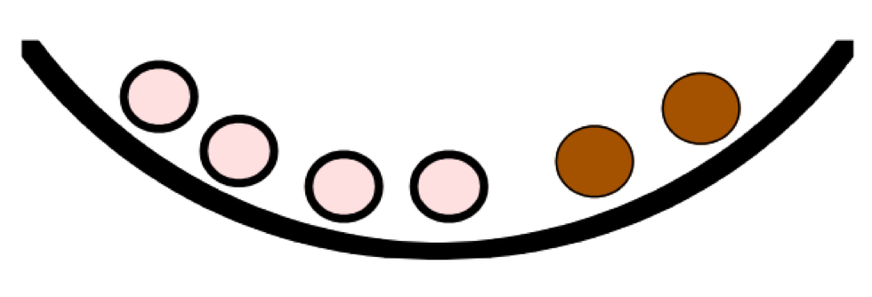
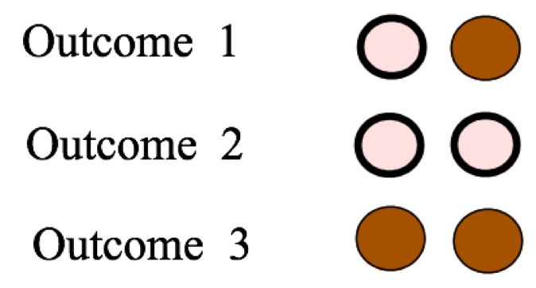
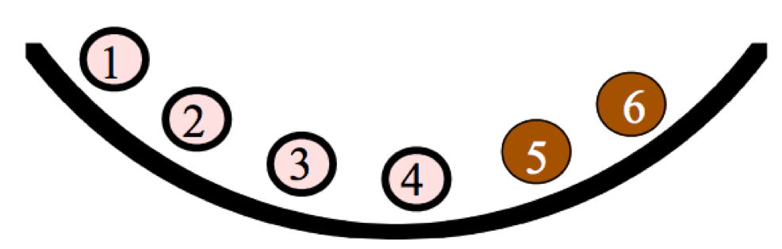
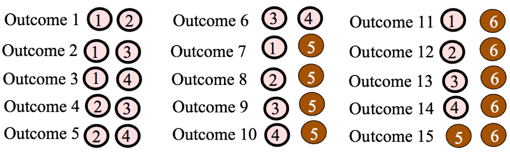
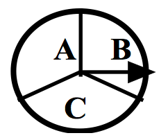
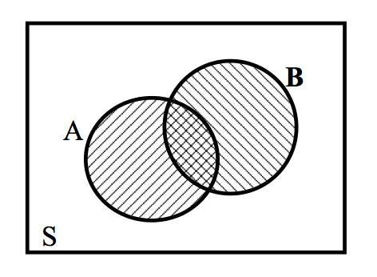

Bayesian Modeling
2019-09-28
Chapter 1 Probability: A Measurement of Uncertainty
1.1 Introduction
The magazine Discover once had a special issue on “Life at Risk.” In an article, Jeffrey Kluger describes the risks of making it through one day:
“Imagine my relief when I made it out of bed alive last Monday morning. It was touch and go there for a while, but I managed to scrape through. Getting up was not the only death-defying act I performed that day. There was shaving, for example; that was no walk in the park. Then there was showering, followed by leaving the house and walking to work and spending eight hours at the office. By the time I finished my day – a day that also included eating lunch, exercising, going out to dinner, and going home – I counted myself lucky to have survived in one piece.”
Is this writer unusually fearful? No. He has read mortality studies and concludes “there is not a single thing you can do in an ordinary day – sleeping included – that isn’t risky enough to be the last thing you ever do.” In The Book of Risks by Larry Laudan, we learn that
- 1 out of 2 million people will die from falling out of bed.
- 1 out of 400 will be injured falling out of bed.
- 1 out of 77 adults over 35 will have a heart attack this year.
- The average American faces a 1 in 13 risk of suffering some kind of injury in home that necessitates medical attention.
- 1 out of 7000 will experience a shaving injury requiring medical attention.
- The average American faces a 1 out of 14 risk of having property stolen this year.
- 1 out of 32 risk of being the victim of some violent crime.
- The annual odds of dying in any kind of motor vehicle accident is 1 in 5800.
Where do these reported odds come from? They are simply probabilities calculated from the counts of reported accidents. Since all of these accidents are possible, that means that there is a risk to the average American that they will happen to him or her. But fortunately, you need not worry – many of these reported risks are too small to really take seriously or change your style of living.
Everywhere we are surrounded by uncertainty. If you think about it, there are a number of things that one are unsure about, like
- what is the high temperature next Monday?
- how many inches of snow will our town get next January?
- what’s your final grade in this class?
- will you be living in the same state twenty years from now?
- who will win the U.S. presidential election in 2024?
- is there life on Mars?
A probability is simply a number between 0 and 1 that measures the uncertainty of a particular event. Although many events are uncertain, one possesses different degrees of belief about the truth of an uncertain event. For example, most of us are pretty certain of the statement “the sun will rise tomorrow”, and pretty sure that the statement “the moon is made of green cheese” is false. One thinks of a probability scale from 0 to 1.
One typically would give the statement “the sun will rise tomorrow” a probability close to 1, and the statement “the moon is made of green cheese” a probability close to 0. It is harder to assign probabilities to uncertain events that have probabilities between 0 and 1. In this chapter, we first get some experience in assigning probabilities. Then three general ways of thinking about probabilities will be described.
1.2 The Classical View of a Probability
Suppose that one observes some phenomena (say, the rolls of two dice) where the outcome is random. Suppose one writes down the list of all possible outcomes, and one believes that each outcome in the list has the same probability. Then the probability of each outcome will be
\[\begin{equation} Prob({\rm Outcome}) = \frac{1}{{\rm Number} \, {\rm of} \, {\rm outcomes}}. \tag{1.1} \end{equation}\]
Let’s illustrate this classical view of probability by a simple example. Suppose one has a bowl with 4 white and 2 black balls

and two balls from the bowl are drawn at random. It is assumed that the balls are drawn without replacement which means that one doesn’t place a ball back into the bowl after it has been selected. What are possible outcomes? There are different ways of writing down the possible outcomes, depending if one decides to distinguish the balls of the same color.
If one doesn’t distinguish between balls of the same color, then there are three possible outcomes – essentially one chooses 0 black, 1 black, or 2 black balls.

If one does distinguish between the balls of the same color, label the balls in the bowl and then write down 15 distinct outcomes of the experiment of choosing two balls.


To apply the classical view of probability, one has to assume that the outcomes are all equally likely. In the first list of three outcomes, one can’t assume that they are equally likely. Since there are more white than black balls in the basket, it is more likely to choose two white balls than to choose two black balls. So it is incorrect to say that the probability of each one of the three possible outcomes is 1/3. That is, the probabilities of choosing 0 black, 1 black, and 2 blacks are not equal to 1/3, 1/3, and 1/3.
On the other hand, since one are choosing two balls at random from the basket, it makes sense that the 15 outcomes in the second listing (where we assumed the balls distinguishable) are equally likely. So one applies the classical notion and assign a probability of 1/15 to each of the possible outcomes. In particular, the probability of choosing two black balls (which is one of the 15 outcomes) is equal to 1/15.
1.3 The Frequency View of a Probability
The classical view of probability is helpful only when we can construct a list of outcomes of the experiment in such a way where the outcomes are equally likely.
The frequency interpretation of probability can be used in cases where outcomes are equally likely or not equally likely.
This view of probability is appropriate in the situation where one is able to repeat the random experiment many times under the same conditions.
Suppose someone is playing the popular game Monopoly and she lands in jail. To get out of jail on the next turn, she either pays $50 or roll “doubles” when she rolls two fair dice. Doubles means that the faces on the two dice are the same. If it is relatively unlikely to roll doubles, then the player may elect to roll two dice instead of paying $50 to get out of jail.
In this situation, the frequency notion can be applied to approximate the probability of rolling doubles. Imagine rolling two dice many times under similar conditions. Each time two dice are rolled, one observes if she get doubles or not. Then the probability of doubles is approximated by the relative frequency
\[ Prob({\rm doubles}) \approx \frac{{\rm Number} \, {\rm of} \, {\rm doubles}}{{\rm Number} \, {\rm of} \, {\rm experiments}}. \]
Rolling two dice
The following R code can be used to simulate the rolling of two dice. The two\_rolls() function simulates rolls of a pair of dice and the replicate() function repeats this process 1000 times and stores the outcomes in the variable many\_rolls.
two_rolls <- function(){
sample(1:6, size = 2, replace = TRUE)
}
many_rolls <- replicate(1000, two_rolls())The results of the first 20 experiments are shown in the table below. For each experiment, one records if there is a match (YES) or no match (NO) in the two numbers that are rolled.
Table 1.1: The results of the first 20 experiments of rolling two dice.
two_rolls <- function(){
sample(1:6, size = 2, replace = TRUE)
}
many_rolls <- replicate(1000, two_rolls())
df <- data.frame(Die_1 = many_rolls[1, ],
Die_2 = many_rolls[2, ])
df$Match <- ifelse(df$Die_1 == df$Die_2, "Yes", "No")
head(df, 20)## Die_1 Die_2 Match
## 1 1 6 No
## 2 5 2 No
## 3 1 3 No
## 4 2 5 No
## 5 1 5 No
## 6 3 6 No
## 7 2 5 No
## 8 4 3 No
## 9 4 1 No
## 10 4 4 Yes
## 11 5 2 No
## 12 6 6 Yes
## 13 6 6 Yes
## 14 5 5 Yes
## 15 3 3 Yes
## 16 1 4 No
## 17 5 3 No
## 18 5 2 No
## 19 5 6 No
## 20 4 1 NoIn the first 20 rolls we observed a match 11 times, so
\(Prob(match) \approx 11/50 = 0.22.\)
Let’s now roll the two dice 10,000 times with R – this time, 1662 matches are observed, so
\(Prob(match) \approx 1662/10000 = 0.1662.\)
Is 0.1662 the actual probability of getting doubles? No, it is still only an approximation to the actual probability. However, as one continues to roll dice, the relative frequency
\[ \frac{number \, of \,doubles}{number \, of \, experiments} \]
will approach the actual probability
\(Prob\)(doubles).
Here the actual probability of rolling doubles is
\(Prob\)(doubles) = 1/6,
which is very close to the relative frequency of doubles that we obtained by rolling the dice 10,000 times.
In this example, one can show that are \(6 \times 6 = 36\) equally likely ways of rolling two distinguishable dice and there are exactly six ways of rolling doubles. So using the classical viewpoint, the probability of doubles is \(6/36 =1/6\).
1.4 The Subjective View of a Probability
Two ways of thinking about probabilities have been described.
- The classical view. This is a useful way of thinking about probabilities when one lists all possible outcomes in such a way that each outcome is equally likely.
- The frequency view. In the situation when one repeats a random experiment many times under similar conditions, one approximates a probability of an event by the relative frequency that the event occurs.
What if one can’t apply these two interpretations of probability? That is, what if the outcomes of the experiment are not equally likely, and it is not feasible or possible to repeat the experiment many times under similar conditions?
In this case, one can rely on a third view of probabilities, the subjective view. This interpretation is arguably the most general way of thinking about a probability, since it can be used in a wide variety of situations.
Suppose one is interested in the probability of the event: "Her team will win the conference title in basketball next season.
One can’t use the classical or frequency views to compute this probability. Why? Suppose there are eight teams in the conference. Each team is a possible winner of the conference, but these teams are not equally likely to win – some teams are stronger than the rest. So the classical approach won’t help in obtaining this probability.
The event of her team winning the conference next year is essentially a one-time event. Certainly, her team will have the opportunity to win this conference in future years, but the players on her team and their opponents will change and it won’t be the same basketball competition. So one can’t repeat this experiment under similar conditions, and so the frequency view is not helpful in this case.
What is a subjective probability in this case? The probability
\(Prob\)(Her team will win the conference in basketball next season)
represents the person’s belief in the likelihood that her team will win the basketball conference next season. If she believes that her school will have a great team next year and will win most of their conference games, she would give this probability a value close to 1. On the other hand, if she thinks that her school will have a relatively weak team, her probability of this event would be a small number close to 0. Essentially, this probability is a numerical statement about the person’s confidence in the truth of this event.
There are two important aspects of a subjective probability.
A subjective probability is personal. One person’s belief about her team winning the basketball conference is likely different from another person’s belief about the team winning the conference since the two people have different information. Perhaps the second person is not interested in basketball and knows little about the teams and the first person is very knowledgeable about college basketball. That means that beliefs about the truth of this event can be different for different people and so the probabilities for these two would also be different.
A subjective probability depends on one’s current information or knowledge about the event in question. Maybe the first person originally thinks that this probability is 0.7 since her school had a good team last year. But when she learns that many of the star players from last season have graduated, this may change her knowledge about the team, and she may now assign this probability a smaller number.
1.4.1 Measuring probabilities subjectively
Although one is used to expressing one’s opinions about uncertain events, using words like likely, probably, rare, sure, maybe, one typically is not used to assigning probabilities to quantify one’s beliefs about these events. To make any kind of measurement, one needs a tool like a scale or ruler. Likewise, one needs tools to help us assign probabilities subjectively. Next, a special tool, called a calibration experiment, will be introduced that will help to determine one’s subjective probabilities.
1.4.1.1 A calibration experiment
Consider the event \(W\): “a woman will be President of the United States in the next 20 years”.
A college student is interested in his subjective probability of \(W\). This probability is hard to specify precisely since he hasn’t had much practice doing it. We describe a simple procedure that will help in measuring this probability.
First consider the following calibration experiment – this is an experiment where the probabilities of outcomes are clear. One has a collection of balls, 5 red and 5 white in a box and one ball is selected at random.
Let \(B\) denote the event that the student observes a red ball. Since each of the ten balls is equally likely to be selected, we think he would agree that \(Prob(B) = 5/10 = 0.5\).
Now consider the following two bets:
- BET 1 – If \(W\) occurs (a women is president in the next 20 years), the student wins $100. Otherwise, the student wins nothing.
- BET 2 – If \(B\) occurs (a red ball is observed in the above experiment), the student wins $100. Otherwise, the student wins nothing.
Based on the bet that the student prefers, one can determine an interval that contains his \(Prob(W)\):
If the student prefers BET 1, then his \(Prob(W)\) must be larger than \(Prob(B) = 0.5\) – that is, his \(Prob(W)\) must fall between 0.5 and 1.
If the student prefers BET 2, then his \(Prob(W)\) must be smaller than \(Prob(B) = 0.5\) – that is, his probability of W must fall between 0 and 0.5.
What the student does next depends on his answer to the second question.
If his \(Prob(W)\) falls in the interval (0, 0.5), then consider the “balls in box” experiment with 2 red and 8 white balls and one are interested in the probability of choosing a red ball.
If instead his \(Prob(W)\) falls in the interval (0.5, 1), then consider the “balls in box” experiment with 8 red and 2 white balls and he is interested in the probability of choosing a red ball.
Let’s suppose that the student believes \(Prob(W)\) falls in the interval (0.5, 1). Then he would make a judgment between the two bets
- BET 1 – If \(W\) occurs (a women is president in the next 20 years), he wins $100. Otherwise, he wins nothing.
- BET 2 – If \(B\) occurs (observe a red ball with a box with 8 red and 2 white balls), he wins $100. Otherwise, he wins nothing.
The student decides to prefer BET 2, which means that his probability \(Prob(W)\) is smaller than 0.8. Based on the information on the two comparisons, the student now believes that \(Prob(W)\) falls between 0.5 and 0.8.
In practice, the student will continue to compare BET 1 and BET 2, where the box has a different number of red and white balls. By a number of comparisons, he will get an accurate measurement at his probability of \(W\).
1.5 The Sample Space
A sample space lists all possible outcomes of a random experiment. There are different ways to write down the sample space, depending on how one thinks about outcomes.
Let’s illustrate the variety of sample spaces by the simple experiment “roll two fair dice.”
Each die is the usual six-sided object that we are familiar with, with the numbers 1, 2, 3, 4, 5, 6 on each side. When one says “fair dice”, one is imagining that each die is constructed such that the six possible numbers are equally likely to come up when rolled.
What can happen when you roll two dice? The collection of all outcomes that are possible is the sample space. But there are different ways of representing the sample space depending on what “outcome” we are considering.
1.5.1 Roll two fair, indistinguishable dice
First, suppose one is interested in the sum of the numbers on the two dice. This would be of interest to a gambler playing the casino game craps. What are the possible sums? After some thought, it should be clear that the smallest possible sum is 2 (if you roll two ones) and the largest possible sum is 12 (with two sixes). Also every whole number between 2 and 12 is a possible sum. So the sample space, denoted by \(S\), would be
\(S\) = {2, 3, 4, 5, 6, 7, 8, 9, 10, 11, 12}.
Suppose instead that one wishes to record the rolls on each of the two dice. One possible outcome would be
(4 on one die, 3 on the other die)
or more simply (4, 3). What are the possible outcomes? Here are the twenty-one possibilities:
Table 1.2: The possible outcomes of rolling two fair, instinguishable dice.
| (1, 1) | (1, 2) | (1, 3) | (1, 4) |
| (1, 5) | (1, 6) | (2, 2) | (2, 3) |
| (2, 4) | (2, 5) | (2, 6) | (3, 3) |
| (3, 4) | (3, 5) | (3, 6) | (4, 4) |
| (4, 5) | (4, 6) | (5, 5) | (5, 6) |
| (6, 6) |
Notice that one is not distinguishing between the two dice in this list. For example, the outcome (2, 3) was written only once, although there are two ways for this to happen – either the first die is 2 and the second die is 3, or the other way around.
Next suppose one distinguishes the two dice – perhaps one die is red and one die is white – and one are considering all of the possible rolls of both dice. We illustrate two ways of showing the sample space in this case.
One way of representing possible rolls of two distinct dice is by a tree diagram shown in Figure . On the left side of the diagram, the six possible rolls of the red die are represented by six branches of a tree. Then,on the right side, the six possible rolls of the white die are represented by by six smaller branches coming out of each roll of the red die. A single branch on the left and a single branch on the right represent one possible outcome of this experiment.
Figure 1.1: Tree diagram representation of the rolls of two dice.
There are alternative ways for representing the outcomes of this experiment of rolling two distinct dice. Suppose one writes down an outcome by the ordered pair
(roll on white die, roll on red die).
Then the possible outcomes are listed below.
Table 1.3. The possible outcomes of rolling two fair, distinguishable dice.
| (1, 1) | (1, 2) | (1, 3) | (1, 4) | (1, 5) | (1, 6) |
| (2, 1) | (2, 2) | (2, 3) | (2, 4) | (2, 5) | (2, 6) |
| (3, 1) | (3, 2) | (3, 3) | (3, 4) | (3, 5) | (3, 6) |
| (4, 1) | (4, 2) | (4, 3) | (4, 4) | (4, 5) | (4, 6) |
| (5, 1) | (5, 2) | (5, 3) | (5, 4) | (5, 5) | (5, 6) |
| (6, 1) | (6, 2) | (6, 3) | (6, 4) | (6, 5) | (6, 6) |
Since these are ordered pairs, the order of the numbers does matter. The outcome (5, 1) (5 on the red, 1 on the white) is different from the outcome (1, 5) (1 on the red die and 5 on the white die).
Two representations of the sample space of possible rolls of two dice have been illustrated. These representations differ by how one records the outcome of rolling two dice. One either (1) records the sum of the two dice, (2) records the individual rolls, not distinguishing the two dice, or (3) records the individual rolls, distinguishing the two dice.
Which one is the best sample space to use? Actually, all of the sample spaces shown above are correct. Each sample space represents all possible outcomes of the experiment of rolling two dice and one cannot say that one sample space is better than another sample space. But one will see that in particular situations some sample spaces are more convenient than other sample spaces when one wishes to assign probabilities. In the current case of rolling two fair dice, the sample space with distinguishable dice is desirable from the viewpoint of computing probabilities since the outcomes are equally likely.
When one writes down sample spaces, one uses whatever method one likes. Onee can use a tree diagram or a table, or one might like to list the outcomes. The important thing is that one has displayed all of the possible outcomes in \(S\).
1.6 Assigning Probabilities
When one has a random experiment, the first step is to list all of the possible outcomes in the sample space. The next step is to assign numbers, called probabilities, to the different outcomes that reflect the likelihoods that these outcomes can occur.
To illustrate different assignments of probabilities, suppose a school girl goes to an ice cream parlor and plans to order a single-dip ice cream cone. This particular parlor has four different ice cream flavors. Which flavor will the school girl order?
First, one writes down the sample space – the possible flavors that the school girl can order. Probabilities will be assigned to these four possible outcomes that reflect a person’s beliefs about her likes and dislikes.
Table 1.4. Writing down the space space: step 1.
| Flavor | Vanilla | Chocolate | Butter Pecan | Maple Walnut |
|---|---|---|---|---|
| Probability |
Can our probabilities be any numbers? Not exactly. Here are some basic facts (or laws) about probabilities:
- Any probability that is assigned must fall between 0 and 1
- The sum of the probabilities across all outcomes must be equal to 1.
- An outcome will be assigned a probability of 0 if one is sure that that outcome will never occur.
- Likewise, if one assigns a probability of 1 to an event, then that event must occur all the time.
With these facts in mind, consider some possible probability assignments for the flavor of ice cream that this school girl will order.
1.6.0.1 Scenario 1
Suppose that the school girl likes to be surprised. She has brought a hat in which she has placed many slips of paper – 10 slips are labeled “vanilla”, 10 slips are labeled “chocolate”, and 10 slips are “butter pecan”, and 10 are “maple walnut”. She makes her ice cream choice by choosing a slip at random. In this case, each flavor would have a probability of 10/40 = 1/4 .
Table 1.5. Assignment of probabilities in scenario 1.
| Flavor | Vanilla | Chocolate | Butter Pecan | Maple Walnut |
|---|---|---|---|---|
| Probability | 1/4 | 1/4 | 1/4 | 1/4 |
1.6.0.2 Scenario 2
Let’s consider a different set of probabilities based on different assumptions about the school girl’s taste preferences. A person knows that she really doesn’t like “plain” flavors like vanilla or chocolate, and she really likes ice creams with nut flavors. In this case, he would assign “Vanilla” and “Chocolate” each a probability of 0, and assign the two other flavors probabilities that sum to one.
Here is one possible assignment.
Table 1.6. Assignment of probabilities in scenario 2.
| Flavor | Vanilla | Chocolate | Butter Pecan | Maple Walnut |
|---|---|---|---|---|
| Probability | 0 | 0 | 0.7 | 0.3 |
Another possible assignment of probabilities that is consistent with these assumptions is the following:
Table 1.7. Another possible assignment of probabilities in scenario 2.
| Flavor | Vanilla | Chocolate | Butter Pecan | Maple Walnut |
|---|---|---|---|---|
| Probability | 0 | 0 | 0.2 | 0.8 |
1.6.0.3 Scenario 3
Let’s consider an alternative probability assignment from a different person’s viewpoint. The worker at the ice cream shop has no idea what flavor the school girl will order. But the worker has been working at the shop all day and she has kept a record of how many cones of each type have been ordered – of 50 cones ordered, 10 are vanilla, 14 are chocolate, 20 are butter pecan, and 6 are maple walnut. If she believes that the school girl has similar tastes to the previous customers, then it would be reasonable to apply the frequency viewpoint to assign the probabilities.
Table 1.8. Assignment of probabilities in scenario 3.
| Flavor | Vanilla | Chocolate | Butter Pecan | Maple Walnut |
|---|---|---|---|---|
| Probability | 10/50 | 14/50 | 20/50 | 6/50 |
Each of the above probability assignments used a different viewpoint of probability as described in previous sections. The first assignment used the classical viewpoint where each of the forty slips of paper had the same probability of being selected. The second assignment was an illustration of the subjective view where one’s assignment was based on one’s opinion about the favorite flavors of one’s daughter. The last assignment was based on the frequency viewpoint where the probabilities were estimated from the observed flavor preferences of 50 previous customers.
1.6.1 Events and Event Operations
In this chapter, probability has been discussed in an informal way. Numbers called probabilities are assigned to outcomes in the sample space such that the sum of the numbers over all outcomes is equal to one. In this section, we look at probability from a more formal viewpoint. One defines probability as a function on events that satisfies three basic laws or axioms. Then all of the important facts about probabilities, including some facts that have been used above, can be derived once these three basic axioms are defined.
Suppose that the sample space for our random experiment is \(S\). An event, represented by a capital letter such as \(A\), is a subset of \(S\). Events, like sets, can be combined in various ways described as follows.
- \(A \cap B\) is the event that both A and B occur (the intersection of the two events)
- \(A \cup B\) is the event that either A or B occur (the union of the two events)
- \(\bar A\) (or \(A^c\)) is the event that A does not occur (the complement of the event A)
To illustrate these event operations, suppose one chooses a student at random from a class and records the month when she or he was born. The student could be born during 12 possible months and the sample space \(S\) is the list of these months:
\(S\) = {January, February, March, April, May, June, July, August, September, October, November, December}.
Define the events \(L\) that the student is born during the last half of the year and \(F\) that the student is born during a month that is four letters long.
\(L\) = {July, August, September, October, November, December}.
\(F\) = {June, July}.
Various event operations can be illustrated using these events.
- \(L \cap F\) is the event that the student is born during the last half of the year AND is born in a four-letter month = {July}.
- \(L \cup F\), in contrast, is the event that the student is EITHER born during the last half of the year OR born in a four-letter month = {June, July, August, September, October, November, December}.
- \(\bar L\) (or \(L^c\)) is the event that the student is NOT born during the last half of the year = {January, February, March, April, May, June}
1.6.2 The Three Probability Axioms
Now that a sample space \(S\) and events are defined, probabilities are defined to be numbers assigned to the events. There are three basic laws or axioms that define probabilities:
- Axiom 1: For any event \(A\), \(P(A) \geq 0\). That is, all probabilities are nonnegative values.
- Axiom 2: \(P(S) = 1\). That is, the probability that you observe something in the sample space is one.
- Axiom 3: Suppose one has a sequence of events \(A_1, A_2, A_3, ...\) that are mutually exclusive, which means that for any two events in the sequence, say \(A_2\) and \(A_3\) , the intersection of the two events is the empty set (i.e. \(A_2 \cap A_3 = \emptyset\)). Then one finds the probability of the union of the events by adding the individual event probabilities:
\[\begin{equation} P(A_1 \cup A_2 \cup A_3 \cup ...) = P(A_1) + P(A_2) + P(A_3) + ... \tag{1.2} \end{equation}\]
Given the three basic axioms, some additional facts about probabilities can be proven. These additional facts are called properties – these are not axioms, but rather additional facts that are derived knowing the axioms. Below several familiar properties about probabilities are stated and we prove how each property follows logically from the axioms.
Property 1: If \(A\) is a subset of \(B\), that is \(A \subset B\), then \(P(A) \le P(B)\).
This property states that if one has two events, such that one event is a subset of the other event, then the probability of the first set cannot exceed the probability of the second. This fact may seem pretty obvious, but how can one prove this from the axioms?
Proof: The proof begins with a Venn diagram where a set \(A\) is a subset of set \(B\). (See Figure .)
Figure 1.2: Two sets where set \(A\) is a subset of set \(B\).
Note that the larger set \(B\) can be written as the union of \(A\) and \(\bar A \cap B\), that is, \[\begin{equation} B = A \cup (\bar A \cap B) \tag{1.3} \end{equation}\] Note that \(A\) and \(\bar A \cap B\) are mutually exclusive (i.e. they have no overlap). So one can apply Axiom 3 and write \[\begin{equation} P(B) = P(A) + P(\bar A \cap B) \tag{1.4} \end{equation}\] Also, by Axiom 1, the probability of any event is nonnegative. So the probability of \(B\) is equal to the probability of \(A\) plus a nonnegative number. So this implies \[\begin{equation} P(B) \ge P(A) \tag{1.5} \end{equation}\] which is what we wish to prove.
Property 2: \(P(A) \le 1\).
This is pretty obvious – probabilities certainly cannot be larger than 1. But how can this property be shown given our known facts including the axioms and Property 1 that was just proved?
Proof: Actually this property is a consequence of Property 1. Consider the two events \(A\) and the sample space \(S\). Obviously \(A\) is a subset of the sample space – that is, \[\begin{equation} A \subset S \tag{1.6} \end{equation}\] So applying Property 1, \[\begin{equation} P(A) \le P(S) = 1. \tag{1.7} \end{equation}\] It is known that \(P(S) = 1\) from the second Axiom 2. So we have proved our result.
1.6.3 The Complement and Addition Properties
There are two additional properties of probabilities that are useful in computation. Both of these properties will be stated without proof, but an outline of the proofs will be given in the end-of chapter exercises. The first property, called the complement property, states that the probability of the complement of an event is simply one minus the probability of the event.
Complement property: For an event \(A\),
\[\begin{equation}P(\bar A) = 1 - P(A). \tag{1.8}\end{equation}\]
The second property, called the addition property, gives a formula for the probability of the union of two events.
Addition property: For two events \(A\) and \(B\),
\[\begin{equation}P(A \cup B) = P(A) + P(B) - P(A \cap B). \tag{1.9}\end{equation}\]
Both of these properties are best illustrated by an example. Let’s revisit the example where one was interested in the birth month of a student selected from a class. As before, let \(L\) represent the event that the student is born during the last half of the year and \(F\) denote the event that the student is born during a month that is four letters long.
There are 12 possible outcomes for the birth month. One can assume that each month is equally likely to occur, but actually in the U.S. population, the numbers of births during the different months do vary. Using data from the births in the U.S. in 1978, we obtain the following probabilities for the months. We see that August is the most likely birth month with a probability of 0.091 and February (the shortest month) has the smallest probability of 0.075.
Table 1.9. Probability table of birth months in the U.S. in 1978.
| Month | Jan | Feb | Mar | Apr | May | June |
|---|---|---|---|---|---|---|
| Prob | 0.081 | 0.075 | 0.083 | 0.076 | 0.082 | 0.081 |
| Month | July | Aug | Sept | Oct | Nov | Dec |
|---|---|---|---|---|---|---|
| Prob | 0.088 | 0.091 | 0.088 | 0.087 | 0.082 | 0.085 |
Using this probability table, one finds …
- \(P(L) = P\)(July, August, September, October, November, December) = 0.088 +0.091+0.088+0.098+0.082+0.085 = 0.521.
- \(P(F)\) = \(P\)(June, July) = \(0.081+0.088 = 0.169\).
Now we are ready to illustrate the two probability properties.
What is the probability the student is not born during the last half of the year? This can be found by summing the probabilities of the first six months of the year. It is easier to compute this probability by noting that the event of interest is the complement of the event \(L\), and the complement property can be applied to find the probability. \[ P(\bar L) = 1 - P(L). \]
What is the probability the student is either born during the last six months of the year {} a month four letters long? In Figure , the sample space \(S\) is displayed consisting of the twelve possible birth months, and the events \(F\) and \(L\) are shown by circling the relevant outcomes. The event \(F \cup L\) is the union of the two circled events.
Applying the addition property, one finds the probability of \(F \cup L\) by adding the probabilities of \(F\) and \(L\) and subtracting the probability of the intersection event \(F \cap L\) :
\[\begin{align*} P(F \cup L) &= P(A) + P(L) - P(F \cap L) \\ &= 0.521 + 0.169 - 0.088 \\ &= 0.602 \end{align*}\]
Figure 1.3: Representation of two sets \(F\) and \(L\) in birthday example.
Looking at Figure , the formula should make sense. When one adds the probabilities of the events \(F\) and \(L\), one adds the probability of the month July twice, and to get the correct answer, one needs to subtract the outcome (July) common to both \(F\) and \(L\).
*Special Note:** Is it possible to simply add the probabilities of two events, say \(A\) and \(B\), to get the probability of the union \(A \cup B\)? Suppose the sets \(A\) and \(B\) are mutually exclusive which means they have no outcomes in common. In this special case,\(A \cap B = \emptyset\), \(P(A \cap B) = 0\) and \(P(A \cup B) = P(A) + P(B)\). For example, suppose one is interested in probability that the student is born in the last half the year (event \(L\)) or in May (event \(M\)). Here, it is not possible to be born in the last half of the year and in May so \(L \cap M = \emptyset\). In this case, \(P(L \cup M) = P(L) + P(M) = 0.521 + 0.082 = 0.603\).
1.7 Exercises
- Probability Viewpoints
In the following problems, indicate if the given probability is found using the classical viewpoint, the frequency viewpoint, or the subjective viewpoint.
- Joe is doing well in school this semester – he is 90 percent sure that he will receive an A in all of his classes.
- Two hundred raffle tickets are sold and one ticket is a winner. Someone purchased one ticket and the probability that her ticket is the winner is 1/200.
- Suppose that 30% of all college women are playing an intercollegiate sport. If we contact one college woman at random, the chance that she plays a sport is 0.3.
- Two Polish statisticians in 2002 were questioning if the new Belgium Euro coin was indeed fair. They had their students flip the Belgium Euro 250 times, and 140 came up heads.
- Many people are afraid of flying. But over the decade 1987-96, the death risk per flight on a US domestic jet has been 1 in 7 million.
- In a roulette wheel, there are 38 slots numbered 0, 00, 1, …, 36. There are 18 ways of spinning an odd number, so the probability of spinning an odd is 18/38.
- Probability Viewpoints
In the following problems, indicate if the given probability is found using the classical viewpoint, the frequency viewpoint, or the subjective viewpoint.
- The probability that the spinner lands in the region A is 1/4.
- The meteorologist states that the probability of rain tomorrow is 0.5. You think it is more likely to rain and you think the chance of rain is 3/4.
- A football fan is 100% certain that his high school football team will win their game on Friday.
- Jennifer attends a party, where a prize is given to the person holding a raffle ticket with a specific number. If there are eight people at the party, the chance that Jennifer wins the prize is 1/8.
- What is the chance that you will pass an English class? You learn that the professor passes 70% of the students and you think you are typical in ability among those attending the class.
- If you toss a plastic cup in the air, what is the probability that it lands with the open side up? You toss the cup 50 times and it lands open side up 32 times, so you approximate the probability by 32/50
- Equally Likely Outcomes
For the following experiments, a list of possible outcomes is given. Decide if one can assume that the outcomes are equally likely. If the equally likely assumption is not appropriate, explain which outcomes are more likely than others.
- A bowl contains six marbles of which two are red, three are white, and one is black. One marble is selected at random from the bowl and the color is observed.
Outcomes: {red, white, black}
- You observe the gender of a baby born today at your local hospital.
Outcomes: {male, female}
- Your school’s football team is playing the top rated school in the country.
Outcomes: {your team wins, your team loses}
- A bag contains 50 slips of paper, 10 that are labeled “1”, 10 labeled “2”, 10 labeled “3”, 10 labeled “4”, and 10 labeled “5”. You choose a slip at random from the bag and notice the number on the slip.
Outcomes: {1, 2, 3, 4, 5}
- Equally Likely Outcomes
For the following experiments, a list of possible outcomes is given. Decide if one can assume that the outcomes are equally likely. If the equally likely assumption is not appropriate, explain which outcomes are more likely than others.
You wait at a bus stop for a bus. From experience, you know that you wait, on average, 8 minutes for this bus to arrive.
Outcomes: {wait less than 10 minutes, wait more than 10 minutes}
You roll two dice and observe the sum of the numbers.
Outcomes: {2, 3, 4, 5, 6, 7, 8, 9, 10, 11, 12}
You get a grade for an English course in college.
Outcomes: {A, B, C, D, F}
You interview a person at random at your college and ask for his or her age.
Outcomes: {17 to 20 years, 21 to 25 years, over 25 years}
- Flipping a Coin
Suppose you flip a fair coin until you observe heads. You repeat this experiment many times, keeping track of the number of flips it takes to observe heads. Here are the numbers of flips for 30 experiments.
## 1 3 1 2 1 1 2 6 1 2 1 1 1 1 3 2 1 1 2 1 5 2 1 7 3 3 3 1 2 3- Approximate the probability that it takes you exactly two flips to observe heads.
- Approximate the probability that it takes more than two flips to observe heads.
- What is the most likely number of flips?
- Driving to Work
You drive to work 20 days, keeping track of the commuting time (in minutes) for each trip. Here are the twenty measurements.
25.4, 27.8, 26.8, 24.1, 24.5, 23.0, 27.5, 24.3, 28.4, 29.0, 29.4, 24.9, 26.3, 23.5, 28.3, 27.8, 29.4, 25.7, 24.3, 24.2
- Approximate the probability that it takes you under 25 minutes to drive to work.
- Approximate the probability it takes between 25 and 28 minutes to drive to work.
- Suppose one day it takes you 23 minutes to get to work. Would you consider this unusual? Why?
- A Man Sent to the Moon
Consider your subjective probability \(P(M)\) where \(M\) is the event that the United States will send a man to the moon in the next twenty years.
- Let \(B\) denote the event that you select a red ball from a box of five red and five white balls. Consider the two bets
- BET 1 – If \(M\) occurs (United States will send a man to the moon in the next 20 years), you win $100. Otherwise, you win nothing.
- BET 2 – If \(B\) occurs (you observe a red ball in the above experiment), you win $100. Otherwise, you win nothing.
Circle the bet that you prefer.
- Let \(B\) represent choosing red from a box of 7 red and 3 white balls. Again compare BET 1 with BET 2 – which bet do you prefer?
- Let \(B\) represent choosing red from a box of 3 red and 7 white balls. Again compare BET 1 with BET 2 – which bet do you prefer?
- Based on your answers to (a), (b), (c), circle the interval of values that contain your subjective probability \(P(M)\).
- What State Will You Be Living in the Future?
Consider your subjective probability \(P(S)\) where \(S\) is the event that at age 60 you will be living in the same state as you currently live.
- Let \(B\) denote the event that you select a red ball from a box of five red and five white balls. Consider the two bets
- BET 1 – If \(S\) occurs (you live in the same state at age 60), you win $100. Otherwise, you win nothing.
- BET 2 – If \(B\) occurs (you observe a red ball in the above experiment), you win $100. Otherwise, you win nothing.
Circle the bet that you prefer.
- Let \(B\) represent choosing red from a box of 7 red and 3 white balls. Again compare BET 1 with BET 2 – which bet do you prefer?
- Let \(B\) represent choosing red from a box of 3 red and 7 white balls. Again compare BET 1 with BET 2 – which bet do you prefer?
- Based on your answers to (a), (b), (c), circle the interval of values that contain your subjective probability \(P(S)\).
- Frequency of Vowels in Huckleberry Finn
Suppose you choose a page at random from the book Huckleberry Finn by Mark Twain and find the first vowel on the page.
- If you believe it is equally likely to find any one of the five possible vowels, fill in the probabilities of the vowels below.
| Vowel | a | e | i | o | u |
|---|---|---|---|---|---|
| Probability |
- Based on your knowledge about the relative use of the different vowels, assign probabilities to the vowels.
| Vowel | a | e | i | o | u |
|---|---|---|---|---|---|
| Probability |
Do you think it is appropriate to apply the classical viewpoint to probability in this example? (Compare your answers to parts a and b.)
On each of the first fifty pages of Huckleberry Finn, your author found the first five vowels. Here is a table of frequencies of the five vowels:
| Vowel | a | e | i | o | u |
|---|---|---|---|---|---|
| Frequency | 61 | 63 | 34 | 70 | 22 |
| Probability |
Use this data to find approximate probabilities for the vowels.
- Purchasing Boxes of Cereal
Suppose a cereal box contains one of four different posters denoted A, B, C, and D. You purchase four boxes of cereal and you count the number of posters (among A, B, C, D) that you do not have. The possible number of “missing posters” is 0, 1, 2, and 3.
- Assign probabilities if you believe the outcomes are equally likely.
| Number of missing posters | 0 | 1 | 2 | 3 |
|---|---|---|---|---|
| Probability | \ |
- Assign probabilities if you believe that the outcomes 0 and 1 are most likely to happen.
| Number of missing posters | 0 | 1 | 2 | 3 |
|---|---|---|---|---|
| Probability | \ |
- Suppose you purchase many groups of four cereals, and for each purchase, you record the number of missing posters. The number of missing posters for 20 purchases is displayed below. For example, in the first purchase, you had 1 missing poster, in the second purchase, you also had 1 missing poster, and so on.
1, 1, 1, 2, 1, 1, 0, 0, 2, 1, 2, 1, 3, 1, 2, 1, 0, 1, 1, 1
Using these data, assign probabilities.
| Number of missing posters | 0 | 1 | 2 | 3 |
|---|---|---|---|---|
| Probability | \ |
- Based on your work in part c, is it reasonable to assume that the four outcomes are equally likely? Why?
- Writing Sample Spaces
For the following random experiments, give an appropriate sample space for the random experiment. You can use any method (a list, a tree diagram, a two-way table) to represent the possible outcomes.
- You simultaneously toss a coin and roll a die.
- Construct a word from the five letters a, a, e, e, s.
- Suppose a person lives at point 0 and each second she randomly takes a step to the right or a step to the left. You observe the person’s location after four steps.
- In the first round of next year’s baseball playoff, the two teams, say the Phillies and the Diamondbacks play in a best-of-five series where the first team to win three games wins the playoff.
- A couple decides to have children until a boy is born.
- A roulette game is played with a wheel with 38 slots numbered 0, 00, 1, …, 36. Suppose you place a $10 bet that an even number (not 0) will come up in the wheel. The wheel is spun.
- Suppose three batters, Marlon, Jimmy, and Bobby, come to bat during one inning of a baseball game. Each batter can either get a hit, walk, or get out.
- Writing Sample Spaces
For the following random experiments, give an appropriate sample space for the random experiment. You can use any method (a list, a tree diagram, a two-way table) to represent the possible outcomes.
- You toss three coins.
- You spin the spinner (shown below) three times.

- When you are buying a car, you have a choice of three colors, two different engine sizes, and whether or not to have a CD player. You make each choice completely at random and go to the dealership to pick up your new car.
- Five horses, Lucky, Best Girl, Stripes, Solid, and Jokester compete in a race. You record the horses that win, place, and show (finish first, second, and third) in the race.
- You and a friend each think of a whole number between 0 and 9.
- On your computer, you have a playlist of 4 songs denoted by a, b, c, d. You play them in a random order.
- Suppose a basketball player takes a “one-and-one” foul shot. (This means that he attempts one shot and if the first shot is successful, he gets to attempt a second shot.)
- Writing Sample Spaces
For the following random experiments, give an appropriate sample space for the random experiment. You can use any method (a list, a tree diagram, a two-way table) to represent the possible outcomes.
- Your school plays four football games in a month.
- You call a “random” household in your city and record the number of hours that the TV was on that day.
- You talk to an Ohio resident who has recently received her college degree. How many years did she go to college?
- The political party of our next elected U.S. President.
- The age of our next President when he/she is inaugurated.
- The year a human will next land on the moon.
- Writing Sample Spaces
For the following random experiments, give an appropriate sample space for the random experiment. You can use any method (a list, a tree diagram, a two-way table) to represent the possible outcomes.
- The time you arrive at your first class on Monday that begins at 8:30 AM.
- You throw a ball in the air and record how high it is thrown (in feet).
- Your cost of textbooks next semester.
- The number of children you will have.
- You take a five question true/false test.
- You drive on the major street in your town and pass through four traffic lights.
- Probability Assignments
Give reasonable assignments of probabilities based on the given information.
- In the United States, there were 4058 thousand babies born in the year 2000 and 1980 thousand were girls. Assign probabilities to the possible genders of your next child.
| Gender | Boy | Girl |
|---|---|---|
| Probability |
- Next year, your school will be playing your neighboring school in football. Your neighboring school is a strong favorite to win the game.
| Winner of Game | Your school | Your neighboring school |
|---|---|---|
| Probability |
- You have an unusual die that shows 1 on two sides, 2 on two sides, and 3 and 4 on the remaining two sides.
| Roll | 1 | 2 | 3 | 4 | 5 | 6 |
|---|---|---|---|---|---|---|
| Probability |
- Probability Assignments
Based on the given information, decide if the stated probabilities are reasonable. If they are not, explain how they should be changed.
- Suppose you play two games of chess with a chess master. You can either win 0 games, 1 game, or 2 games, so the probability of each outcome is equal to 1/3.
- Suppose 10% of cars in a car show are Corvettes and you know that red is the most popular Corvette color. So the chance that a randomly chosen car is a red Corvette must be larger than 10%.
- In a Florida community, you are told that 30% of the residents play golf, 20% play tennis, and 40% of the residents play golf and tennis.
- Suppose you are told that 10% of the students in a particular class get A, 20% get B, 20% get C, and 20% get D. That means that 30% of the class must fail the class.
- Finding the Right Key
Suppose your key chain has five keys, one of which will open up your front door of your apartment. One night, you randomly try keys until the right one is found.
Here are the possible numbers of keys you will try until you get the right one:
1 key, 2 keys, 3 keys, 4 keys, 5 keys
- Circle the outcome that you think is most likely to occur.
1 key, 2 keys, 3 keys, 4 keys, 5 keys
- Circle the outcome that you think is least likely to occur.
1 key, 2 keys, 3 keys, 4 keys, 5 keys
- Based on your answers to parts a and b, assign probabilities to the six possible outcomes.
- Playing Roulette
One night in Reno, you play roulette five times. Each game you bet $5 – if you win, you win $10; otherwise, you lose your $5. You start the evening with $25. Here are the possible amounts of money you will have after playing the five games.
$0, $10, $20, $30, $40, $50 .
- Circle the outcome that you think is most likely to occur.
$0, $10, $20, $30, $40, $50 .
- Circle the outcome that you think is least likely to occur.
$0, $10, $20, $30, $40, $50 .
- Based on your answers to parts a and b, assign probabilities to the six possible outcomes.
| lcccccc | Outcome& (0&)10 & (20 &)30 &(40 &)50
Probability& & & & & &
- Cost of Your Next Car
Consider the cost of the next new car you will purchase in the future. There are five possibilities:
- cheapest: the car will cost less than $5000
- cheaper: the car will cost between $5000 and $10,000.
- moderate: the car will cost between $10,000 and $20,000
- expensive: the car will cost between $20,000 and $30,000
- really expensive: the car will cost over $30,0000
- Circle the outcome that you think is most likely to occur.
cheapest, cheaper, moderate, expensive, really expensive
- Circle the outcome that you think is least likely to occur.
cheapest, cheaper, moderate, expensive, really expensive
- Based on your answers to parts a and b, assign probabilities to the five possible outcomes.
- Flipping a Coin
Suppose you flip a coin twice. There are four possible outcomes (\(H\) stands for heads and \(T\) stands for tails).
\(HH, HT, TH, TT\)
- Circle the outcome that you think is most likely to occur.
\(HH, HT, TH, TT\)
- Circle the outcome that you think is least likely to occur.
\(HH, HT, TH, TT\)
- Based on your answers to parts a and b, assign probabilities to the four possible outcomes.
- Playing Songs in Your iPod
Suppose you play three songs by Jewell (J), Madonna (M), and Plumb (P) in a random order.
- Write down all possible ordering of the three songs.
- Let \(M\) = event that the Madonna song is played first and \(B\) = event that the Madonna song is played before the Jewell song. Find \(P(M)\) and \(P(B)\).
- Write down the outcomes in the event \(M \cap B\) and find the probability \(P(M \cap B )\).
- By use of the complement property, find \(P(\bar B)\).
- By use of the addition property, find \(P(M \cup B)\).
- Student of the Day
Suppose that students at a local high school are distributed by grade level and gender.
| Freshmen | Sophomores | Juniors | Seniors | TOTAL | |
|---|---|---|---|---|---|
| Male | 25 | 30 | 24 | 19 | 98 |
| Female | 20 | 32 | 28 | 15 | 95 |
| TOTAL | 45 | 62 | 52 | 34 | 193 |
Table of grade level and gender.
Suppose that a student is chosen at random from the school to be the “student of the day”. Let \(F\) = event that student is a freshmen, \(J\) = event that student is a junior, and \(M\) = event that student is a male.
- Find the probability \(P(\bar F)\).
- Are events \(F\) and \(J\) mutually exclusive. Why?
- Find \(P(F \cup J)\) .
- Find \(P(F \cap M)\).
- Find \(P(F \cup M)\).
- Proving Properties of Probabilities
Given the three probability axioms and the properties already proved, prove the complement property \(P(\bar A) = 1 - P(A)\). An outline of the proof is written below.
- Write the sample space \(S\) as the union of the sets \(A\) and \(\bar A\).
- Apply Axiom 3.
- Apply Axiom 2.
- Proving Properties of Probabilities
Given the three probability axioms and the properties already proved, prove the addition property \(P(A \cup B) = P(A) + P(B) - P(A \cap B)\). A Venn diagram and an outline of the proof are written below.

- Write the set \(A \cup B\) as the union of three sets that are mutually exclusive.
- Apply Axiom 2 to write \(P(A \cup B)\) as the sum of three terms.
- Write the set \(A\) as the union of two mutually exclusive sets.
- Apply Axiom 2 to write \(P(A)\) as the sum of two terms.
- By writing the set \(B\) as the union of two mutually exclusive sets and applying Axiom 2, write \(P(B)\) as the sum of two terms.
- By making appropriate substitutions to the expression in part b, one obtains the desired result.